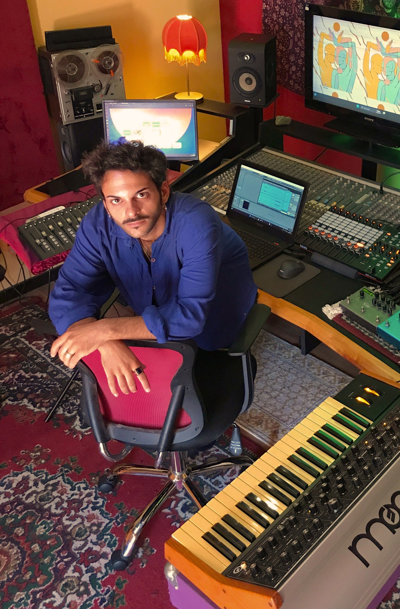
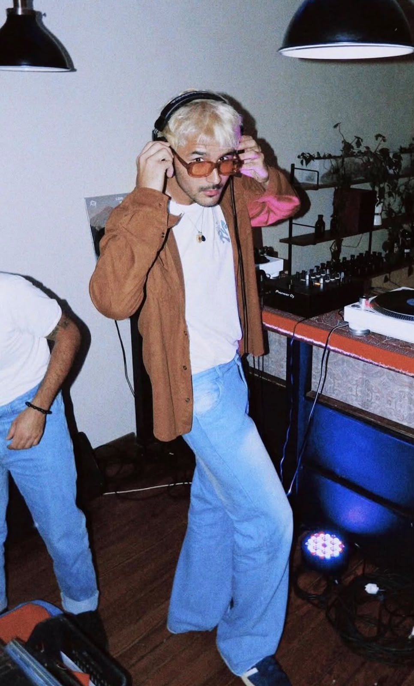

Servicios
Grabá tu disco en el estudio. Producción, filmación, mezcla y máster.
Ver paquetes →Sello
Nuestros artistas en vivo. Festivales, ciclos, casamientos y eventos.
Ver el roster →Elegí por dónde entrar
Grabá tu disco en el estudio. Producción, filmación, mezcla y máster.
Ver paquetes →Nuestros artistas en vivo. Festivales, ciclos, casamientos y eventos.
Ver el roster →Somos cuatro personas y un estudio. Cada uno resuelve una parte distinta de un disco, y podés contratarnos por lo que necesites: venir a grabar entero, o sumar a alguno para que te resuelva lo que a vos te falta.

Te graba. Y cuando el disco está tocado, lo mezcla y lo deja masterizado, listo para subir a plataformas.

Si te falta un instrumento, lo toca. Guitarras, arreglos, producción y edición, con 25 años de oficio y sin casarse con ningún género.
Te hace la batería. Le busca el pulso a la canción y ordena las etapas para que la grabación no se empantane.

Te hace la tapa. Y el sistema completo del lanzamiento: etiqueta, funda, booklet y material para redes.
Sesiones en el estudio, con los músicos que necesites de nuestro lado.
Traés lo grabado, te lo dejamos listo para plataformas.
Registro audiovisual de las sesiones, para que el disco tenga con qué mostrarse.
De la primera maqueta a la tapa terminada, todo bajo el mismo techo.
Los artistas que están adentro de Reina Prisma. Podés escucharlos, y también contratarlos para tocar: cada proyecto funciona en un tipo de escenario distinto y te ayudamos a elegir cuál va con tu evento.
La playlist del sello. Subí el volumen.